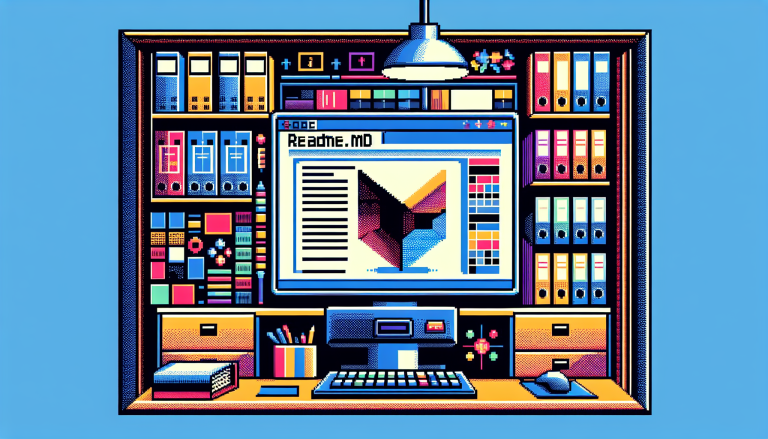
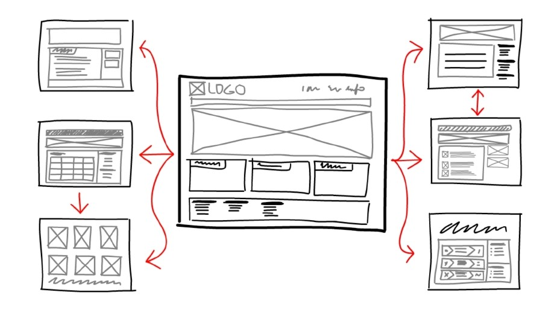

What Is the Purpose of a README file?
A good README file serves as a project's "front door," acting as a crucial piece of documentation that explains
what an application does, why the specific technologies were chosen, and how it differentiates a high-quality
project to both users and potential employers. At a minimum, an effective layout must include the project title,
a descriptive overview, clear instructions on installation and usage, collaborator credits, and an appropriate
open-source license.
Read more

What Is the Purpose of a Wireframe?
A wireframe is a simplified visual guide used in web and app design to outline the structure, layout, and
functionality of a digital interface. It focuses on arrangement rather than aesthetics, showing where content,
navigation, and interactive elements will be placed. This skeletal structure helps designers and clients
visualize the user experience and make decisions about layout and functionality early in the development
process,
before time and resources are invested in detailed visual design.
Read more